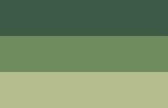

Painter primitives
Plain text, bold, italic, underlined text
and struck-through text, at more than one size:
small type and larger type.
- A disc for the first item
- and for the second
- A numbered item
- and another
A translucent fill inside a translucent border.
A one-pixel border.
